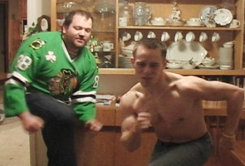

The Latest Headlines from
Cork Bowl 20
Cork Bowl 20
Teams Announced
September 12th - The rosters and official
game date for Cork Bowl 20 were finally announced Sunday. Fittingly, the
game will be played on Saturday, November 20th at Corklestick Park. Despite
20 years of games, this year's game will have some new faces and new roster
sizes. For the first time ever, rosters will include 7 players per team
due to some unique circumstances surrounding the game. Long-time veteran
Greg Howard, who has played in each Cork Bowl since his debut in Cork Bowl
6, informed the league of his inability to play due to his current enrollment
in police academy. However, the league made an exception for Howard to play
quarterback for one team, thus opening up a spot for long-time attendee
Dustin Waldrop to quarterback the other squad. "Obviously I didn't
want any rules to be changed just for me," commented Howard. "I'm
excited the league is giving me the opportunity to play quarterback. I hope
I can put on a good show." As for Waldrop, he too was excited to get
the call. "I've been coming to this game for who knows how many years
hoping for a chance to play so obviously I'm pumped to finally get on the
field this year. Plus it will give me a chance to show off the cannon I
have attached to my right shoulder."
With the two quarterbacks only playing
offense, the league expanded the roster sizes to 7 players for the first
time ever to accommodate the lack of a defensive substitute. "We went
back and forth on how we wanted to handle that and finally decided for the
good of the game we needed another player on each team," added Commissioner
Patrick Cork. "Let's face it, nobody playing this game is getting any
younger and the other five players on each team would have been forced to
play defense the entire game with no breaks. We all know how the 4th quarters
have looked the past few years even with an extra player on each team so
it was really a no-brainer to expand the rosters this year. Now we'll be
able to have two players rest at a time on offense and one guy sitting on
defense. It should make the level of play better as the game goes along
in the second half. And we've got a pair of up-and-coming players that I
think could leave their mark on this year's game and find themselves playing
in many Cork Bowls in the future."
In addition to Waldrop playing his
first ever game, the seventh players that will be making their debuts are
Aaron Zehr and Evan Barmes - both of Vincennes, Indiana. "They are
both excited to be a part of history," added Commissioner Cork. "It's
not every day you get to step into a game that's been around for 20 years
and do something that's never been done before. They'll both contribute,
and they'll both show that adding the extra player was the right decision."
Both Barmes and Zehr will play extensively on the defensive side of the
ball, but will both get plenty of time on offense as well. The league has
yet to announce any official rules regarding their use, but both expect
to be on the field for a significant part of the game. "It's not going
to be one of the setups where they only play defense like we have done a
few times in the past," added Cork. "They'll be out there a lot
- and they'll both make impacts." You have to go all the way back to
Cork Bowl 7 when there were as many as 3 rookies making their debuts, but
with Howard playing quarterback for the first time in his career, the number
might as well be 4 this year.
As for the teams, the Mallards will
be led by Howard at quarterback. He'll have emerging superstar Robert Trimble
along with the top two all-time receptions leaders in Patrick and Chris
Cork. Joining them will be Josh Williamson, Ryan Tomlison and the rookie
Aaron Zehr. "Obviously I'm a little anxious to get on the field and
get going," commented Howard. "I've played in a ton of Cork Bowls
but to have the ball in your hands on every play and having to make the
decisions and tough throws is completely different than anything I've done
before. It helps to know I've got veteran receivers to pick me up. It really
takes the pressure off."
For the Sloth, Dustin Waldrop will
be under center and will have a deep receiving corps of his own led by veterans
Brooks Wilson and Jake Hoalt who are coming off career games last year.
Wilson won the first MVP of his career with lifetime bests in catches (22)
and touchdowns (10) while Hoalt also posted career highs in receptions (17)
and touchdowns (8). Willy Truitt makes the move from quarterback to receiver
for the first time since Cork Bowl 14. In Truitt's two games at receiver
(Cork Bowls 13 and 14) he averaged 13 catches and 3 touchdowns. Rounding
out the roster for the Sloth are Kevin Ryan, Evan Woodard and the rookie
Evan Barmes. "I've got plenty of options and am looking forward to
putting up a lot of points," commented Waldrop."
Back to top
Three Rookies
Set to Make Their Debuts
September 20th - For the first time
since 1997, there will be three rookies on the same playing field for Cork
Bowl. Long-time attendee Dustin Waldrop will be quarterbacking the Sloth
with Evan Barmes joining him and Aaron Zehr breaking in with the Mallards.
"To say they're excited is an understatement," said Commissioner
Patrick Cork. As it has been well documented, rookies have had mixed results
in past Cork Bowls. The most memorable rookie performance was in Cork Bowl
11 when Jeff Henney was named the most valuable player. Henney had 12 catches,
12 tackles and returned 3 interceptions for touchdowns. Josh Yargus had
a similar game in Cork Bowl 7 with 17 catches and 3 interception returns
for scores as well, while Steve "Colonel" Sanders hauled in 15
passes in his Cork Bowl 10 debut. "It wouldn't shock me if Barmes or
Zehr hit double digits in catches and tackles," added Cork. "These
two are going to play significant roles without a doubt." While there
have been a number of success stories, there have been more than a few rookie
performances that were memorable in other ways. "I won't mention any
names, but we all remember a few people that couldn't handle the pressure
out of the game," added Cork. "I don't think that will be an issue
this time around, but you never know until the game starts."
The most attention will definitely
be placed on Waldrop under center. In the "modern" era of Cork
Bowl, no rookie has made his debut as quarterback. "There's a lot of
pressure just playing this game, let alone having the game riding on your
arm on every play," stated quarterback great Willy Truitt. "It
took several years before I was truly comfortable back there so D-Wal is
definitely going to have to handle that pressure, especially early in the
game." As for Barmes and Zehr, they will be able to break in with less
fanfare than Waldrop. Both players will play offense and defense, but being
surrounded by veterans will make things easier on both.
Although he's no rookie, Greg Howard
will be playing quarterback for the first time in his career. "I feel
like a rookie all over again," commented Howard. "Those same jitters
and nerves are there." Sanders and Henney are the most recent players
to make the shift to quarterback. Sanders did so for Cork Bowl 11 when he
had a forgettable game in the mud throwing 6 interceptions while under intense
pressure throughout the game. Jeff Henney had outstanding results last year
in Cork Bowl 19 throwing for 19 touchdowns on 52 completions. Neither player
was able to lead his team to a win, however that will change this year with
both QB's being new to the position. "Thankfully I don't have to worry
about a pass rush," added Howard. "I just need to make sure I
make good decisions and make the right throws."
Back to top
Howard and Waldrop
Both Expecting Victory
October 4th - Long time friends will
be pitted against each other at the most important position on the field
in what promises to be one of the most memorable Cork Bowls of all-time
on November 20th. Cork Bowl veteran Greg Howard will match up with rookie
Dustin Waldrop in the first head-to-head battle of first-time quarterbacks
in the modern era of the game. "Despite Greg's experience in Cork Bowl,
nothing really can prepare you to quarterback in this game," remarked
all-time leading passer Willy Truitt. "Until you step on the field
and have the ball in your hands every play, you really don't understand
what goes into it. I know things are going to be moving at 100 mph for both
of those guys on game day." 
Although Howard has spent virtually
his entire career playing receiver, he does have a very brief history at
the quarterback position dating back to his first two games played in 1996
and 1997. Howard completed both passes he attempted, including one for a
touchdown, but that was 13 years ago. "Honestly I don't even remember
ever playing quarterback, so that doesn't help me much," responded
Howard. "I have always prided myself on putting pressure on the defense
late in games since all these guys are so out of shape and bringing some
thunder when on defense, but I'm not going to be able to do either of those
things this year. My goal at receiver was to score every time I touched
the ball, but I'm going to have to remember that's not going to be the case
at quarterback. I have to put my receivers in good opportunities to make
catches and get first downs and not get too greedy throwing the ball downfield."
As for Waldrop, he's attended nearly
10 Cork Bowls in his lifetime, but will be breaking new ground when he sets
foot on the field. "I've waited a long time for this opportunity,"
said Waldrop. "All those years of standing out in the cold watching
these superstars play - now it's my time to shine - my turn to join the
Cork Bowl elite. I'm a student of the game and plan to use that experience
to lead the Sloth to a victory." Waldrop has spent the past few summers
playing semi-professional football in central Illinois - but admits that
those games pale in comparison to Cork Bowl. "Those games are fun,
but you really can't compare them to what Cork Bowl offers," added
Waldrop. "This game is what it's all about - one game for a chance
at immortality."
"D-Wal knows more about football
already than most people will ever know in their lifetimes," added
Willy Truitt. "It's not going to take long for everyone watching and
playing to see that. He's got a huge arm and as long as he can control his
emotions and stay focused, he's going to put on a show this year. In my
opinion, we have a distinct advantage at quarterback this year - and that
almost always means a win."
"I think a lot of people are
underestimating Greg playing quarterback," added long-time Howard buddy
Josh Williamson. "I think as long as he keeps his emotions in check,
we'll be in great shape. I have no concerns about him throwing the deep
ball with the size of those pythons he has attached to his shoulders - it's
all going to be about our receivers getting open and giving him a chance.
We have the pressure on us to give him easy targets in my opinion. He's
got a lot of history with most of us (Patrick, Chris, Me, Tomlinson) - so
communication and knowing what to expect from each other will not be a problem.
That's not the case with D-Wal and the Sloth. He's had a great training
camp so far and it should only get better the more time we spend with each
other on the practice field."
Back to top
Vuvuzelas to
be banned at Cork Bowl 20
October 12th - After the controversy
that surrounded the use of the South African air trumpet, the vuvuzela at
this year's FIFA World Cup, the management of Cork Bowl has decided to ban
the use of vuvuzelas at Corklestick Park for Cork Bowl 20.
"With the Cork Bowl setting record
attendances each year, we needed to make sure that Cork Bowl was an enjoyable
experience for all involved," Commissioner Patrick Cork said. "Also,
there is an increasing South African population in the Greater Robinson
area who may be interested in attending the game."
Cork added, "While the vuvuzelas
may improve the already festive atmosphere, we have to worry about keeping
a positive relationship with the neighborhood around Corklestick Park since
the game is played on a Saturday morning."
Also, the vuvuzelas may interfere
with the players being able to hear the important six-second count to get
the pass off. With two rookie quarterbacks, the atmosphere will be chaotic
enough for them. They don't need extra noise to add to the confusion.
"I have enough to worry about
trying to spread the ball around to keep the massive egos of Robert Trimble,
Chris Cork and Ocho Siete in check," Mallards quarterback Greg "Sweetchuck"
Howard said. "I don't need to feel like I'm playing the game in a giant
beehive. Plus, we have to keep our broadcasting partners in mind. Cork Bowl
has been blessed with many great commentators in the past and we want to
make sure their comments are heard by the many fans who will purchase the
game on DVD."
"'The Coach' Tony Cork isn't
going to climb up on the garage in the cold if no one is going to hear him
spit his verbal fire during the game." Commissioner Cork added.
Back to top
Tomlinson
Reportedly Demanded Trade from Mallards
October 15th - Another Cork Bowl -
another Ryan Tomlinson controversy. Once again the veteran fan favorite
managed to find himself amidst controversy in the weeks leading up to a
Cork Bowl. After past incidents ranging from hitting a police officer with
his bicycle to investigations into illegal ferret fighting, this time the
story deals directly with on-field issues. "I don't think request is
a strong enough word to describe what went down," shared an anonymous
source close to the Mallards organization. "Demand is the only word
that I can think of."
The incident apparently went down
last week after a hard-fought practice session. Tomlinson, supposedly unhappy
with the role he has played in the offensive game plan, is said to have
approached team ownership and informed them he wanted out. Tomlinson, however,
says the incident was blown way out of proportion. "I never demanded
anything," answered Tomlinson. "Were there some discussions about
my role on this team? Absolutely. But I want to be a part of this team and
win myself another championship. Emotions are running high for some of us
because we're getting up there in years and we don't know how many chances
we've got left to win another ring. But the rumors of me demanding a trade
simply aren't true."
If a trade were to go down, some within
the league insinuated that there were some initial talks with the Colorado
Springs Cork Bowl league involving a possible deal for Justin Massey. However,
the reported discussions never amounted to much and the Mallards claim such
discussions never took place. "Again, it's the rumor mill running wild,"
added veteran Mallard receiver Chris Cork. "You see this stuff every
year the closer we get to game day. The media follows us around 24 hours
a day for three months leading up to the game and when you only have 6 or
7 players on each team, there are only so many actual news stories you can
report. This latest trade demand rumor doesn't surprise me. RT isn't going
anywhere. Not that we wouldn't be interested in upgrading at receiver, but....you
know what never mind - scratch that last part."
Back to top
Norv Turner
and Wade Phillips Hoping to Get Hired for Cork Bowl
October 26th - With Cork Bowl 20 rapidly
approaching, a number of current and former NFL coaches have been lining
up to try to catch on with one of the two teams. The two most notable names
are San Diego's head coach Norv Turner and Dallas' Wade Phillips. "I
can confirm both of these men have contacted the Cork Bowl front offices
and have been in touch with the Mallards and The Sloth," remarked Commissioner
Patrick Cork. "Anything beyond that is just speculation." It appears
both Turner and Phillips, despite being currently employed by NFL teams,
are hoping to have a job in place before they get fired. The Chargers and
Cowboys both refused to comment on the situation.
Despite the coaching experience of
both men, neither Cork Bowl team has shown much interest. "Norv Turner
turned a 14-2 team into a last place team in one of the worst divisions
in the NFL in a matter of four years," stated veteran Willy Truitt.
"That's hard to do - even if you try to lose games. And Wade Phillips
has shown that high expectations for his team lead to horrible results as
witnessed by the Cowboys 1-5 record. I don't know why either of the Cork
Bowl teams would be interested in hiring a coach that makes every team he
coaches worse than they were when he got there. There are enough veterans
on these teams that there is no reason to make a risky move like that. Especially
when we have proven coaches already in the area that have much better results."
As always, the name Brian Garrard
has floated around the rumor mill in recent weeks. Garrard is no stranger
to the sideline having coached offense and defense in a number of Cork Bowls
over the past ten years. However, Garrard's agent refused to answer any
questions regarding his client's plans for November and beyond. Also of
note was the recent emergence of up and coming coach T.J. Sutfin who has
significant experience coaching 4th and 5th grade basketball in Robinson.
“His experience coaching little kids on the basketball court would
come in very handy coaching people like Howard and Tomlinson,” stated
an anonymous member of the Sloth. Several other notable names have surfaced
as well including former NFL coaches Art Shell and Rich Kotite. Shell has
fittingly been working at a local Shell station while Kotite is running
several 7-11 stores into the ground in southern Pennsylvania.
Back to top
Tomlinson
Out; Josh Massey In for the Mallards
November 1st - Just weeks after trade
rumors swirled surrounding Ryan Tomlinson, the man who can't seem to stay
out of the headlines announced he won't be playing in Cork Bowl 20 after
all."I had an opportunity present itself that was too good to pass
up," commented Tomlinson in a prepared statement. "My services
are needed in the Sunshine State and it's with great regret that I will
not be participating in such an important game this year. For it to be a
milestone game like Cork Bowl 20 makes this decision even harder, but after
talking with my family this is the best decision for all of us. I wish my
Mallard teammates the best of luck and I know they won't disappoint."
After playing in every game from Cork Bowl 7 through Cork Bowl 16, Tomlinson
missed three years from 2007-2009 before returning last year for his 11th
season. "It looked like he would be back and establishing himself as
a regular like old times," responded Mallards quarterback Greg Howard.
"It's a shame we won't be seeing him on the field this year."
Replacing Tomlinson will be former
cameraman Josh Massey. Massey, who filmed a number of Cork Bowls in the
late '90s becomes the fourth Cork Bowl cameraman to make the move from the
booth to the field. Josh Massey follows the same trail that was blazed by
older brother Justin in Cork Bowl 7 when Justin became the first cameraman-turned-player
in Cork Bowl history. "When you spend those cold days behind the camera
watching the action, you always dream that maybe someday you'll be down
there yourself," said Massey. "But it's been about 10 years since
I have been at a game so I thought maybe that window of opportunity had
closed. To get the call after all these years is overwhelming."
With less than 3 weeks to go before
the game, Massey will need to catch on quick to the Mallards schemes in
order to make an impact. "He's been in the military and he knows how
to learn and react on the fly," complimented teammate Patrick Cork.
"He'll be fine. We're going to focus mostly on defense over the next
couple of weeks and then give him a handful of formations and plays on offense
the week of the game. We'll give him plenty of opportunities to contribute
for sure."
As mentioned, Massey follows in the
footsteps of other cameraman that have paid their dues before finding a
spot on a roster - including older brother Justin, Jake Hoalt and Evan Woodard.
The only question left is what the future holds for current camerawoman
Ashley Yochum. "She's definitely becoming a staple of the game,"
added Patrick Cork. "Who knows, if someone gets hurt you might just
see her on the field this year. With Tomlinson gone, we'll be missing that
female influence and she would fill that void well."
Back to top
Cork
Bowl to Have Live Updates via Twitter
November 4th - Cork Bowl, in order
to grow its brand across the globe, took its first step into social media
by launching a twitter account today.
The account, which can be found at
@CorkBowl, will give updates on developments prior to the game as well as
game day updates throughout the game.
"While attendance at Cork Bowl
has been increasing every year, there are still many fans who are unable
to make it to Corklestick Park for the game," said Director of Statistics
and Marketing, Mike Miller. "We feel that this will get fans even more
excited for the game."
It is the hope of the Cork Bowl staff
that every player in the game will follow the Cork Bowl account in order
for fans to directly interact with their Cork Bowl idols.
"Maybe if some fans talked a
little smack to Chris Cork, he would improve that 5.3 40 time," Miller
added. "And by 5.3 40, I mean 40 feet."
Unlike the NFL, players will not be
fined or suspended for tweeting during the game. "You can totally see
it happening in this era of technology," commented Commissioner Patrick
Cork. "And frankly, we'll encourage it. Anything to get more attention
paid to the action on the field would be great. If Trimble scores a touchdown
and takes out his phone and tweets "just roasted Wilson AGAIN-I'm unstoppable"
- I think that would be great."
Back to top
Williamson
Out; Sutfin In; Massey/Kevin Ryan Traded
November 8th - With less than two
weeks until Cork Bowl 20, the uncertainty surrounding this year's game may
have finally come to a close after a wild weekend full of more roster moves
from both teams. After the Mallards found out Ryan Tomlinson would not be
playing in this year's game last weekend, they found out on Saturday that
Josh Williamson was out of game action as well. Williamson was a last minute
scratch from last year's game as well. Tomlinson was originally replaced
by Josh Massey on the roster, but in a stunning move, Massey was traded
for the Sloth's veteran tight end Kevin Ryan on Sunday. "With the loss
of two veterans like Tomlinson and Williamson, we really felt the need to
bring in some more experience," remarked Mallards receiver Patrick
Cork. "Success in this game has often been driven by those players
that have been here before and we didn't feel like we could afford to lose
another veteran presence in the locker room. We might have lost a little
speed by trading Massey, but I think Kevin's veteran savvy will more than
make up for that." As for Massey, the trade came as a bit of a shock.
"I was pumped to get signed to a deal last week, so being traded just
days later was a little surprising, but I'm still playing in the game and
that's all that really matters," stated Massey. "This is a business
and I understand that. I'm excited to get to my new team as soon as possible
and get to work - not to mention share some of the information I gained
in my week with the Mallards." "It was tough to see Kevin go,"
added Sloth captain Willy Truitt. "But we needed to get quicker, especially
on defense. If we're going to win this game, it will be from big plays on
the defensive side of the ball. Massey brings a little more size and speed
to our defense and we'll need that with their big receivers like Trimble
and Chris. That does leave us with 3 rookies which is a little concerning,
but I don't see Waldrop performing like a typical rookie at quarterback.
D-Wal is going to be a stud."
Still needing to fill the void left
by Willamson's departure, the Mallards scanned the waiver wire and offered
a one-year deal to Crossfit extraordinaire Jason Sutfin. Sutfin, at the
fresh young age of 41, will become the oldest non-quarterback to play in
a Cork Bowl (and the second oldest player in history behind Hall of Famer
Tony Cork). "He may be 41, but I guarantee he's in far better shape
than 75% of the people that will be on the field next weekend," remarked
veteran Chris Cork while lounging on his couch with a Dr. Pepper in his
hand. Sutfin was obviously excited about reaching an agreement with the
Mallards just two weeks prior to the game, especially since the NFL season
has been such a disaster for his beloved Dallas Cowboys. "It's a huge
deal to be playing in Cork Bowl, especially since this is the 20th anniversary
game. In fact, I'm going to send a recommendation to the people of Crossfit
that a future Workout of the Day needs to be playing in Cork Bowl. It's
a chance to turn around all the disappointment from the current NFL season
and make the football season of 2010 a memorable one. I can't wait to strap
on the cleats and step onto the Corklestick Field. Seeing Greg Howard throwing
me a perfect spiral in the endzone will be like Danny White hitting Drew
Pearson for a touchdown. At least I hope it's like that instead of like
Jon Kitna throwing the ball to the wrong team every other play."
With the additions of Sutfin and Massey
to this year's game, there will be an unprecedented 5 rookies playing in
Cork Bowl 20 - not to mention Greg Howard playing his first ever game as
quarterback. "Obviously we are excited to have some new guys in the
mix, but there is definitely a bit of disappointment in losing two fan-favorites
like Ryan and Josh," commented Commissioner Patrick Cork. "Williamson's
contributions to the pregame show will not be able to be replaced, that's
a given. There is a lot of anticipation going into this year's game because
nobody really knows what to expect from the new guys. That's something that
has been missing in years past - the uncertainty of what each player will
bring to the table. Those of us that have been playing for years know each
other extremely well so it always came down to who executed better or made
the least number of mistakes. This year, seeing which one of these new guys
will step up and make plays on offense and defense will be a huge part of
who comes out on top. Nerves will obviously be a huge issue as it always
is with rookies. I think whichever team's veteran leaders can get these
new guys calmed down and focused will be the team to take home the trophy.
With the new players, and the expanded rosters, I'm hoping for a record-breaking
crowd for this year's game too." Cork Bowl 20 is scheduled to begin
around 10:30 Central (11:30 Eastern) on Saturday, November 20th.
Back to top
Will Willy
Truitt Retire After Cork Bowl 20?
November 11th - Just one year after
Hall of Famer Reggie Truitt officially hung up the cleats, younger brother
Willy may be ready to follow in his footsteps. A recent comment from Truitt
during the Sloth's weekly press conference raised some eyebrows regarding
his status for upcoming Cork Bowls. When asked how he was preparing to play
receiver for the first time since Cork Bowl 14, Truitt responded, "I'm
just going about things the same way I do every year. Putting in a lot of
time on the practice field, and even more time in the film room. I'm looking
forward to running some good routes and catching everything thrown my way.
It will be nice to be out there running around one last time." When
asked to clarify what "one last time" meant, Truitt refused to
elaborate and walked out of the press conference. Multiple phone calls and
text messages to Truitt and his agent have gone unanswered as well.
"I haven't heard anything about
him retiring," commented brother ReggieTruitt. "If you listen
to what he said, it sounds to me like he's talking about playing receiver
one last time - not playing Cork Bowl one last time. Greg's quarterback
status this year is probably just a one-time deal so I would fully expect
him to be back out there under center next winter." Although nobody
knows Willy's true intentions beyond this year, it has been confirmed he
has been battling some rib and back issues throughout the season. In fact,
an anonymous Sloth representative said his status for this year's game was
up in the air up until a week ago due to the injuries and Truitt is listed
as questionable on the injury report. "Obviously, Willy is extremely
important to Cork Bowl and has been for 15 years," added Commissioner
Patrick Cork. "There aren't many players who have truly bought into
everything Cork Bowl is about as much as Willy has. I hope these are nothing
but rumors because I would hate to see him walk away from the game with
so many more milestones within reach."
Truitt, Cork Bowl's all-time leading
passer in every category had arguably the best game of his career in Cork
Bowl 19 going 62-for-86 with a record-tying 22 touchdown passes. For his
career, he has completed 484 passes and has thrown 176 touchdowns - nearly
double that of his closest competitor. 500 or 600 completions and 200 touchdowns
are well within reach if Truitt were to quarterback several more years.
Back to top
Vegas Giving
the Sloth the Advantage
November 14th - The MGM Grand in Las
Vegas has released the opening lines for Cork Bowl XX. The Sloth are opening
as 8 point favorites over the Mallards, with the over/under being set at
288.
"The sharps in Vegas like the
core of players the Sloth return from last year's Cork Bowl champion,"
USA Today's Danny Sheridan said. "They are also impressed by the combine
workouts of rookies Dustin Waldrop and Evan Barmes."
"There are also genuine concerns
about the Mallards roster among the sharps," Sheridan added. "Most
of the roster is past their prime (if they ever had a prime) and Greg Howard
and Kevin Ryan are on personal three-game Cork Bowl losing streaks."
The high total on the over/under is
in part because of the near-record scoring in last year's contest plus a
current forecast that may have the game-time temperature in the 50s.
"Obviously, good weather and
a fast field would lend itself to a high scoring game." Commissioner
Patrick Cork said. "The record 168 points scored by the Muskrats back
in Cork Bowl VI might be in danger."
For the first time, the MGM Grand
is offering odds on who will win the MVP honors for Cork Bowl. Last year's
Co-MVP Brooks Wilson is the current favorite at 3-2 odds, with two-time
MVP Robert Trimble close behind at 5-2. Patrick Cork is listed at 3-1 odds,
with Willy Truitt at 4-1 and Chris Cork at 9-2.
Those looking for some value would
be interested in Jake Hoalt at 7-1, Greg Howard at 10-1, or Evan Woodard
at 12-1. Each of the five rookies, Aaron Zehr, Jason Sutfin, Dustin Waldrop,
Evan Barmes and Josh Massey, are listed at 14-1. Kevin Ryan is listed as
the longshot at 15-1.
Back to top
Back to Cork Bowl 20 |